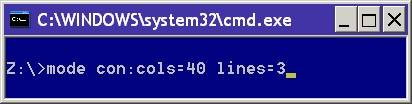

Configure a system device: COM / LPT port, or CMD console CON.
Syntax
Serial port:
MODE COMm[:] [BAUD=b] [PARITY=p] [DATA=d] [STOP=s]
[to=on|off] [xon=on|off] [odsr=on|off]
[octs=on|off] [dtr=on|off|hs]
[rts=on|off|hs|tg] [idsr=on|off]
Device Status:
MODE [device] [/STATUS]
Redirect printing:
MODE LPTn[:]=COMm[:]
Select code page:
MODE CON[:] CP SELECT=yyy
Code page status:
MODE CON[:] CP [/STATUS]
Display size - number of columns wide and number of lines deep:
MODE CON[:] [COLS=c] [LINES=n]
undocumented) abbreviated version of the above:
MODE Cols, Lines
Typematic rate:
MODE CON[:] [RATE=r DELAY=d]
Used without parameters, MODE displays the status of all devices installed on your system
(typically COM1, COM2, LPT1, CON)
MODE
Mode can be used to set the display window to be larger than the monitor width and/or height, in this case the CMD window size will be restricted to the display size but a scroll bar will appear. If the display window is made very large (many times the size of a typical display), the memory used by conhost.exe will increase, in extreme cases to over 1 GB.
Show the status of a specific device:
MODE [device]
To additionally show the status of any redirected parallel printer:
MODE [device] [/STATUS]
Keyboard
Typematic rate is the rate at which a character is repeated when
you hold down a key.
MODE CON[:] [RATE=r DELAY=d]
Printing
To redirect output from a parallel port (PRN, LPT1, LPT2, or LPT3) to a serial
port(COM1, COM2, COM3, etc).
You must be a member of the Administrators group to redirect printing.
To configure a parallel printer port (PRN, LPT1, LPT2, or LPT3):
MODE LPTn[:]=COMm[:]
To setup the parameters for a serial port.
MODE COMm [options*]
Configure a printer connected to a parallel printer port.
mode LPTn[:] [c][,[l][,r]]
mode LPTn[:] [cols=c] [lines=l]
This allows you to configure a line printer connected to a parallel printer
port.
International Settings
Change the current code page:
MODE CON[:] CP SELECT=yyy
Display the current Code page:
MODE CON[:] CP [/STATUS]
Examples:
MODE CON:cols=80 lines=25
MODE 80, 50

“The dogma of the ghost in the machine” ~ Gilbert
Ryle
Related:
NET - manage network resources
CHCP - Display or change device settings
Equivalent bash command (Linux):
screen - Terminal window manager